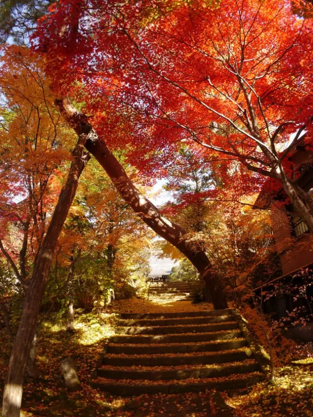
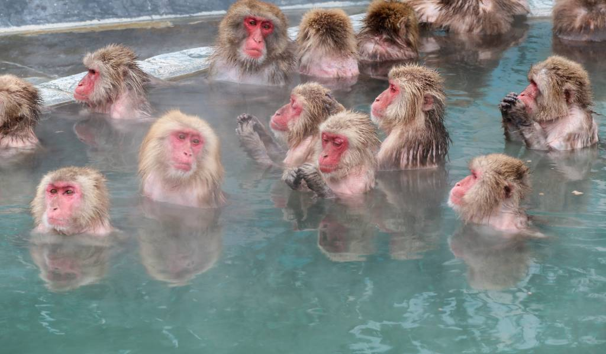
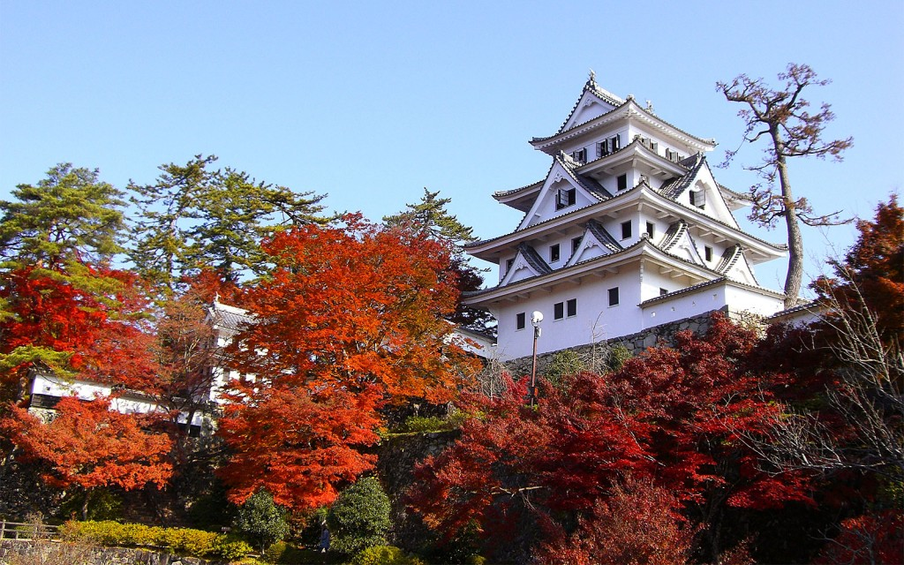

How to Travel to Takayama Takayama is located in the middle of Japan. The map above shows where it is. Below are instructions on how to get there.
Get to Tokyo
From Tokyo
Once you are in Tokyo there are two ways to get to Takayama. The cheapest and fastest ways to get there:
The train , which takes 4h 43m and costs $90 or ¥13612.
The bus , which takes 6h 55m and costs $50 or ¥7500.
In Takayama
You have made it! Scroll down to see fun things to do!
What to do I have listed a few places for you to see, below are links to hotels, restaurants, and tourist attractions.
Best foods to try
Hida-gyu is a type of beef, it is made with Hida-gyu beef, Salt, Pepper, Soy sauce, Garlic, Vegetables, Rice, Sake, Mirin, and Sesame seeds/oil. It is cooked at very high-class restaurants and is a very yummy food.
Mitarashi dangos are skewers made of Mochiko (glutinous rice flour), water, sugar, soy sauce, mirin, and cornstarch, they are very good and I recommend them on your trip.
Soba noodles are made with buckwheat flour, wheat flour, water, and salt. They are a great eat-in Takayama, and you should work so into your trip.
Hotels/Inns
Here is a link to some nice hotels, they are cheap and accept USD
The Wat Hotel , is $45 or ¥6670 a night. They have a seven-minute walk from the Takayama train station (for those who took the train this is nice). They also offer hot springs and a spa.
The FAV Hotel , is $60 or ¥9100 a night, they have good rooms, and a nice spa as well.
Places to go/see
Here are some places to go and visit in Takayama!
The Yoshijima heritage house is a fun place to see. It is a historic, home of social features that has been assessed to be worth preserving for generations to come. The Heritage House was built in 1869, it has been the home of a Sake brewery since "olden times". Click here to check it out!
The Kusakabe Folk Crafts Museum is a Museum dedicated to all the Crafts and merchants that used to live in Takayama. It is located in the Takayama old town district, and most of the pieces there are from the Edo period. The tickets to the Kusakabe Folk Crafts Museum are USD 150 or ¥22150. Click here to check it out!
The Higashiyama Walking Course is a hike full of temples and shrines. It is a great hike for those who love history because there are a lot of big temples here. It's not the longest tour at 3.5 kilometers, but there is a castle and private homes are among the sights. Click here to check it out!

The Jigokudani Monkey Park is a zoo dedicated to monkeys! You will take a walk to giant pool/hot spring while watching the monkeys. The monkeys live great lives having access to hot springs, and a mini forest. The monkeys live in large play groups, and it can be fun and silly to watch their interactions and playtime. Click here to check it out!

The Hachiman Castle is a large temple made out of wood and built in 1559. The castle's mountaintop perch provides a nice view of the town and the valley below. It is open year-round and $3 or ¥300. Maple trees surround the castle and make for a great picnic spot or photoshoot in early to mid-November! Click here to check it out!

Reveiw
Here is my opinion on Takayama, and if you should go!
I think Takayama is a great place to visit! Culture and tradition are all over the place and you will never be bored. The food in Takayama is very good as well, it is made of passed-down recipes full of love and tradition, filling it with flavor and happiness. The prices are also more convenient for you because $1 is ¥150, making buying things way more affordable. It is full of fun places and relics to see and check out, like the Jigokudani Monkey Park and the Kusakabe Folk Crafts Museum. It is a fun escape from work or school, and is fun for just one or the whole fam! I hope to see you in Takayama soon!
Fun Facts!
Takayama is a city in Japan. The language there is Japanese. Most people there don't speak English so if you plan to go there it is best to know Japanese.
In Hiragana Takayama it is spelled たかやま.